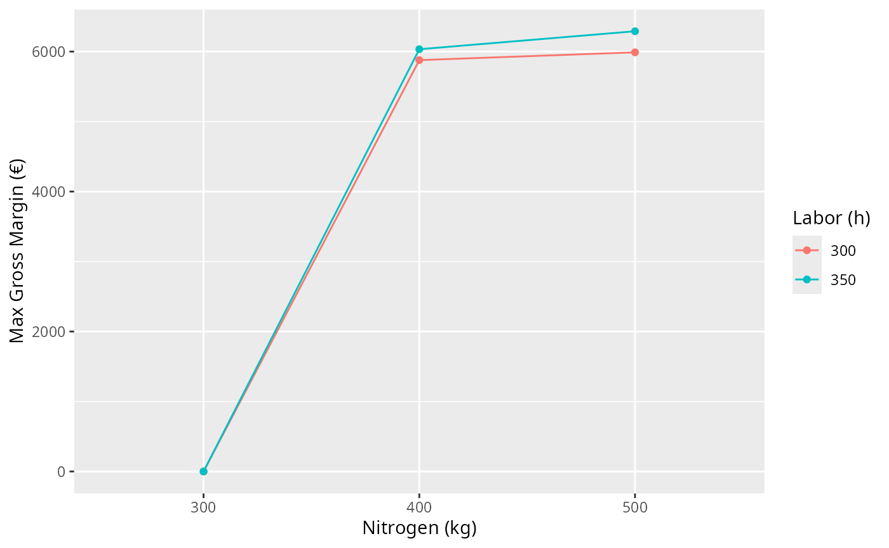

vignettes/WinterCropsAreaBounds.Rmd
WinterCropsAreaBounds.RmdA Mediterranean farm has 15 ha of land, 350 h of labor and 500 kg of available nitrogen. It can grow four winter crops:
Oat (a gramineae)
Barley (a gramineae)
Fava bean (a legume)
Lupin (a legume)
Crop data (per ha):
| Crop | N fertilizer (kg) | Labor (h) | Gross margin (€) |
|---|---|---|---|
| Oat | 80 | 20 | 400 |
| Barley | 100 | 25 | 450 |
| Lupin | 0 | 15 | 350 |
| Fava bean | 30 | 30 | 500 |
We wish to maximize total gross margin subject to resource constraints. Furthermore, each crop has a required area range (ha):
Oat: 2 ≤ area ≤ 8
Barley: 1 ≤ area ≤ 6
Fava: 3 ≤ area ≤ 7
Lupin: 2 ≤ area ≤ 5
# Step 1: Define Resource Constraints (flexible min/max for each crop)
resources <- define_resources(
resources = c(
# global totals
"land", "labor", "nitrogen",
# per‐crop bounds
"oat_min", "oat_max",
"barley_min","barley_max",
"lupin_min", "lupin_max",
"fava_min", "fava_max"
),
availability = c(
# totals
15, 350, 500,
# bounds
2, 8,
1, 6,
3, 7,
2, 5
),
direction = c(
# totals all <=
"<=", "<=", "<=",
# minimums >=
">=", "<=",
">=", "<=",
">=", "<=",
">=", "<="
)
)
print(resources)
#> resource availability direction
#> 1 land 15 <=
#> 2 labor 350 <=
#> 3 nitrogen 500 <=
#> 4 oat_min 2 >=
#> 5 oat_max 8 <=
#> 6 barley_min 1 >=
#> 7 barley_max 6 <=
#> 8 lupin_min 3 >=
#> 9 lupin_max 7 <=
#> 10 fava_min 2 >=
#> 11 fava_max 5 <=
# Step 2: Define Activities
activity_requirements_matrix <- matrix(
c(
# land usage (ha/ha)
1, 1, 1, 1,
# labor (h/ha)
20,25,15,30,
# nitrogen (kg N/ha)
80,100, 0,30,
# bounds rows for technical matrix:
# for oat_min (1 for oat else 0)
1,0,0,0,
# for oat_max
1,0,0,0,
# barley_min
0,1,0,0,
# barley_max
0,1,0,0,
# fava_min
0,0,1,0,
# fava_max
0,0,1,0,
# lupin_min
0,0,0,1,
# lupin_max
0,0,0,1
),
nrow = nrow(resources),
byrow = TRUE,
dimnames = list(
resources$resource,
c("oat", "barley", "lupin", "fava")
)
)
objective <- c(oat = 400, barley = 450, lupin = 350, fava = 500)
activities <- define_activities(
activities = colnames(activity_requirements_matrix),
activity_requirements_matrix = activity_requirements_matrix,
objective = objective
)
activities
#> activity land labor nitrogen oat_min oat_max barley_min barley_max
#> oat oat 1 20 80 1 1 0 0
#> barley barley 1 25 100 0 0 1 1
#> lupin lupin 1 15 0 0 0 0 0
#> fava fava 1 30 30 0 0 0 0
#> lupin_min lupin_max fava_min fava_max objective
#> oat 0 0 0 0 400
#> barley 0 0 0 0 450
#> lupin 1 1 0 0 350
#> fava 0 0 1 1 500
# Step 3: Build and Solve the Model
model <- create_ram_model(resources, activities)
solution <- solve_ram(model, direction = "max")
dat <- data.frame(
activity = names(solution$optimal_activities),
level = round(as.numeric(solution$optimal_activities), 1)
)
DT::datatable(
dat,
rownames = FALSE,
options = list(
autoWidth = TRUE,
columnDefs = list(
list(width = '2cm', targets = 0), # first column (activity)
list(width = '2cm', targets = 1) # second column (level)
)
)
) |>
DT::formatRound(
columns = "level",
digits = 2
)
summary_ram(solution)
cat("Maximum gross margin (EUR):", solution$objective_value, "\n")
#> Maximum gross margin (EUR): 6290
plot_ram(solution)Below we explore what happens if we vary total nitrogen and labour availability.
library(ram)
# 1) Re‐load your data.frames from the vignette/example:
resources # data.frame with columns resource, availability, direction
#> resource availability direction
#> 1 land 15 <=
#> 2 labor 350 <=
#> 3 nitrogen 500 <=
#> 4 oat_min 2 >=
#> 5 oat_max 8 <=
#> 6 barley_min 1 >=
#> 7 barley_max 6 <=
#> 8 lupin_min 3 >=
#> 9 lupin_max 7 <=
#> 10 fava_min 2 >=
#> 11 fava_max 5 <=
activities # data.frame with columns activity, land, labor, nitrogen, …, objective
#> activity land labor nitrogen oat_min oat_max barley_min barley_max
#> oat oat 1 20 80 1 1 0 0
#> barley barley 1 25 100 0 0 1 1
#> lupin lupin 1 15 0 0 0 0 0
#> fava fava 1 30 30 0 0 0 0
#> lupin_min lupin_max fava_min fava_max objective
#> oat 0 0 0 0 400
#> barley 0 0 0 0 450
#> lupin 1 1 0 0 350
#> fava 0 0 1 1 500
# 2) Build the ram specs:
res0 <- define_resources(
resources = resources$resource,
availability = resources$availability,
direction = resources$direction
)
# NOTE THE TRANSPOSE HERE!
tech_mat <- t( as.matrix(
activities[, setdiff(names(activities), c("activity","objective"))]
) )
act0 <- define_activities(
activities = activities$activity,
activity_requirements_matrix = tech_mat,
objective = activities$objective
)
# 3) Define your scenario grid:
scenarios <- list(
nitrogen = c(300, 400, 500),
labor = c(300, 350)
)
# 4) Run them:
scen_df <- run_scenarios(res0, act0, scenarios, direction = "max")
print(scen_df)
#> nitrogen labor objective oat barley lupin fava
#> 1 300 300 0.000 0.000000 0.0 0.0 0.000000
#> 2 400 300 5877.778 2.166667 1.0 7.0 4.222222
#> 3 500 300 5988.889 3.833333 1.0 7.0 3.111111
#> 4 300 350 0.000 0.000000 0.0 0.0 0.000000
#> 5 400 350 6033.333 2.000000 1.0 7.0 4.666667
#> 6 500 350 6290.000 2.000000 1.9 6.1 5.000000
library(ggplot2)
ggplot(scen_df, aes(x = factor(nitrogen), y = objective, color = factor(labor), group = factor(labor))) +
geom_line() + geom_point() +
labs(x = "Nitrogen (kg)", y = "Max Gross Margin (€)", color = "Labor (h)")